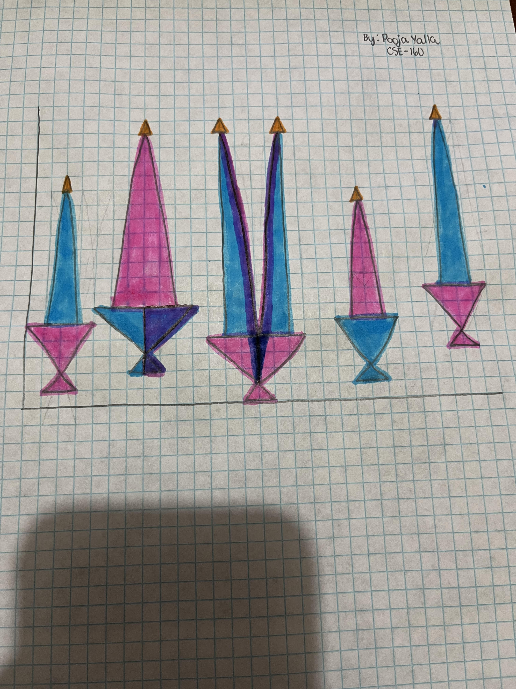

Awesomeness feature!: gap filling now added to the brush, so now, shapes are interpolated between mouse positions during dragging for smooth, continuous strokes.
Picture: five candles drawn using triangles, the initials 'P' and 'Y' are incorporated into the design; 'P' is shown in the candle holder of the second candle from the left, and 'Y' is shown in the third candle.
My original drawing:

Drawing Mode:
Red:
Green:
Blue:
Size:
Segments: